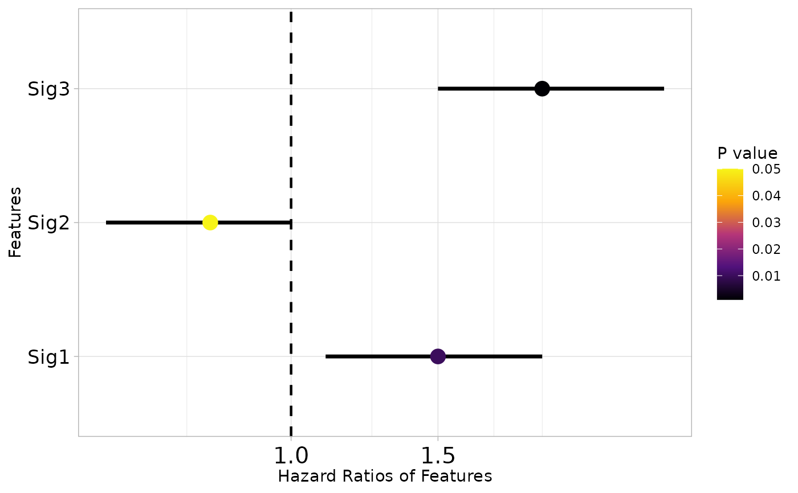

Generates a forest plot to visualize hazard ratios, confidence intervals, and p-values for gene signatures or features from survival analysis.
Usage
sig_forest(
data,
signature,
pvalue = "P",
HR = "HR",
CI_low_0.95 = "CI_low_0.95",
CI_up_0.95 = "CI_up_0.95",
n = 10,
max_character = 25,
discrete_width = 35,
color_option = 1,
cols = NULL,
text.size = 13
)Arguments
- data
Data frame with survival analysis results including p-values, hazard ratios, and confidence intervals.
- signature
Character string. Column name for signatures or feature names.
- pvalue
Character string. Column name for p-values. Default is `"P"`.
- HR
Character string. Column name for hazard ratios. Default is `"HR"`.
- CI_low_0.95
Character string. Column name for lower CI bound. Default is `"CI_low_0.95"`.
- CI_up_0.95
Character string. Column name for upper CI bound. Default is `"CI_up_0.95"`.
- n
Integer. Maximum number of signatures to display. Default is `10`.
- max_character
Integer. Maximum characters for labels before wrapping. Default is `25`.
- discrete_width
Integer. Width for discretizing long labels. Default is `35`.
- color_option
Integer. Color option for p-value gradient (1, 2, or 3). Default is `1`.
- cols
Character vector. Custom colors for p-value gradient (low to high). Default is `NULL`.
- text.size
Numeric. Text size for y-axis labels. Default is `13`.
Examples
# Example with sample survival results
sample_results <- data.frame(
ID = c("Sig1", "Sig2", "Sig3"),
HR = c(1.5, 0.8, 2.0),
P = c(0.01, 0.05, 0.001),
CI_low_0.95 = c(1.1, 0.6, 1.5),
CI_up_0.95 = c(2.0, 1.0, 2.8)
)
sig_forest(data = sample_results, signature = "ID")
#> `height` was translated to `width`.
